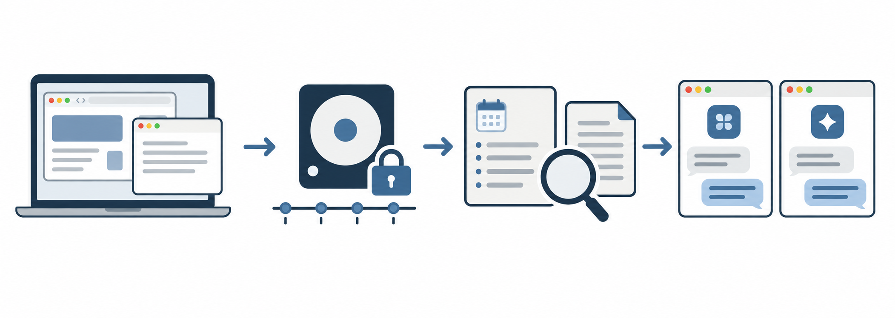

macOS 메뉴바 앱 · 오픈 소스
Mac에서 읽은 내용을
출처와 함께 다시 찾으세요.
Side는 브라우저와 Mac 앱의 활성 창에서 읽을 수 있는 내용을 기기에 기록합니다. 기록을 검색하고, 요약 제공자를 설정해 전송에 동의하면 날짜별 요약도 확인할 수 있습니다. 연결한 에이전트에서도 기록을 검색할 수 있습니다.
개발 중 · macOS 14+ · 사전 빌드 앱 미제공
오후에 읽은 문서를
출처와 함께 찾아보세요.
요약에서 원본 기록을 여는 과정을 보여주는 합성 예시입니다.
활동 기록 방식
활성 창의 내용을 기록하고 출처를 검색하세요.
Side는 활성 창에서 읽을 수 있는 내용을 기기에 기록합니다. 요약 제공자를 설정하고 전송에 동의하면 날짜별 요약을 생성합니다.

- 01활성 창의 내용 읽기
- 02Mac에 기록 보관
- 03기록과 요약 검색
- 04Aside 에이전트에서 찾기
Side.app이 실행 중일 때 Side를 Aside의 MCP 서버로 등록하면, Aside 에이전트가 Side에 기록된 활동을 검색할 수 있습니다. 연결 방법 보기 ↗
Mac에서 내용 기록
macOS 권한을 허용하면 활성 앱과 브라우저의 텍스트를 읽습니다. 특정 앱·웹사이트를 제외하거나 언제든 기록을 일시정지할 수 있습니다.
기록 검색과 날짜별 요약
기기에 저장된 기록을 검색할 수 있습니다. 날짜별 요약을 생성하려면 요약 제공자를 설정하고 활동 브리핑 전송에 동의해야 합니다.
연결한 에이전트에서 검색
MCP를 연결하면 history_search, history_read, memory_search로 기록과 요약을 검색하고 출처를 확인할 수 있습니다.
시작하기
Mac에서 소스를 빌드해 설치하세요.
macOS 14+, Bun, Xcode Command Line Tools, FTS5와 확장 로딩을 지원하는 SQLite dylib가 필요합니다. 빌드 과정에서 MiniLM 모델을 내려받습니다.
git clone https://github.com/Chris-Chai-Minjae/side-context-awareness.git
cd side-context-awareness
bun install --frozen-lockfile
bun run build
ditto apps/side-mac/.build/release/Side.app /Applications/Side.app
open /Applications/Side.app앱을 종료한 뒤 새 빌드를 복사하세요. 이 로컬 빌드는 임시 서명되며, 교체 후 macOS 권한을 다시 부여해야 할 수 있습니다. 상세 조건은 README를 확인하세요.
모델과 에이전트
요약 제공자와 에이전트 연결은 선택 사항입니다.
MiMo, MiniMax, OpenAI API 키는 Side 설정에 직접 입력하며 macOS Keychain에 보관됩니다. 이미 로그인한 Claude Code를 요약 제공자로 선택할 수도 있습니다.
요약 제공자를 설정하지 않아도 기록은 할 수 있습니다. 요약 생성에는 제공자 설정과 전송 동의가 필요합니다.
Claude Code, Codex, Cursor, Aside 등에서 검색하려면 각 클라이언트에 Side의 로컬 MCP 서버를 등록해야 합니다.
claude mcp add --scope user side -- "/Applications/Side.app/Contents/Resources/side" mcpSide가 실행 중일 때 Claude Code의 사용자 범위에 등록하는 예입니다. 다른 에이전트의 등록 방법은 연결 안내 ↗를 참고하세요.
프라이버시와 동의
제외할 앱·웹사이트와 외부 전송 여부를 설정하세요.
Side는 원본 기록을 클라우드에 동기화하지 않습니다. 기록 보존 기간과 제외 목록을 설정하고, 기록을 일시정지하거나 삭제할 수 있습니다.
Accessibility와 Input Monitoring 권한을 안내합니다. Screen Recording은 OCR을 위한 선택 권한이며, 지원하는 브라우저의 URL을 읽을 때는 Automation 권한을 사용합니다.
원본 기록의 민감 정보가 담긴 컬럼은 마스킹 후 암호화하지만, 모든 비밀 정보를 찾아내지는 못합니다. 요약과 날짜별 페이지는 기기에 평문으로 저장됩니다.
“Send evidence to this provider” 설정은 기본적으로 꺼져 있습니다. 켜면 마스킹한 활동 브리핑을 선택한 제공자에게 전송합니다.
연결한 에이전트가 MCP 검색 결과를 자체 모델에 전달할 수 있습니다. 연결하기 전에 해당 서비스의 데이터 정책을 확인하세요.
현재 상태
현재는 소스에서 직접 빌드해야 합니다.
Side는 개발 중이며, 각자의 Mac에서 소스를 빌드해 사용해야 합니다. 사전 빌드 앱의 Developer ID 서명·공증과 장시간 실기기 검증은 완료되지 않았습니다. Grok Build 로그인으로 Side 요약을 만드는 경로는 검증되지 않았으며, 요약 제공자로 연결되어 있지 않습니다. 기능별 근거와 남은 검증 항목은 저장소의 QA 보고서에서 확인할 수 있습니다.
Open source macOS menu bar app
Find the context
behind your day.
Side stores readable content from active browser and Mac app windows on your device. Search it with its sources, or create daily summaries after configuring a provider and consenting to send activity briefings. Connected agents can search that history too.
In development · macOS 14+ · source build only
Find what you read,
with the source.
A synthetic example of the path from a summary back to its source.
How it works
Capture, summarize, trace the source.
Side gathers readable context from the active window and organizes your day through a summary provider you authorize.
- 01Read active windows
- 02Store on your Mac
- 03Search records and summaries
- 04Find with Aside agents
While Side.app is running, register Side as an MCP server in Aside so Aside agents can search activity recorded by Side. See connection steps ↗
Observe on your Mac
With your permission, Side reads text from active apps and browsers. Exclude apps or websites, or pause capture at any time.
Organize by time and topic
Search local records and configure a summary provider for daily memories. Summaries require provider setup and consent to send evidence.
Ask an agent
Connect MCP to use history_search, history_read, and memory_search and inspect the source.
Get started
Build it from source.
Requires macOS 14+, Bun, Xcode Command Line Tools, and a SQLite dylib with FTS5 and extension loading. The build downloads the MiniLM model.
git clone https://github.com/Chris-Chai-Minjae/side-context-awareness.git
cd side-context-awareness
bun install --frozen-lockfile
bun run build
ditto apps/side-mac/.build/release/Side.app /Applications/Side.app
open /Applications/Side.appQuit Side before copying a new build. Local builds use ad hoc signing, so macOS permissions may need to be granted again after replacement. See the README for details.
Models and agents
Your connections, your choice.
Each user enters their own MiMo, MiniMax, or OpenAI API key in Side settings; the keys are stored in their macOS Keychain. An existing Claude Code login is an optional summary provider.
Provider setup is optional. Capture can run without one, but summaries will wait.
Register Side's local MCP server separately in Claude Code, Codex, Cursor, Aside, or another client.
claude mcp add --scope user side -- "/Applications/Side.app/Contents/Resources/side" mcpExample: register Side in Claude Code at user scope while Side is running. See agent connection instructions ↗ for other clients.
Privacy and consent
Choose what stays and what leaves.
Side does not sync raw captures to the cloud. Set retention, exclusions, pause capture, or delete Side history.
Side guides you through Accessibility and Input Monitoring. Screen Recording is optional for OCR; Automation is used for supported browser URLs.
Sensitive raw columns are masked and encrypted, but pattern matching cannot catch every secret. Summaries and daily pages remain readable local files.
“Send evidence to this provider” is off by default. Turning it on sends masked activity briefings to your chosen provider.
A connected agent may pass MCP results to its own model. Check that service's data policy before connecting it.
Development status
Open source, with gates still open.
Side is in development. Distribution currently means building from source on each user's Mac. A prebuilt app has not completed Developer ID signing and notarization, and long running device checks remain. Using a Grok Build login to create Side summaries is unverified and is not connected as a summary provider. See the repository's QA reports for evidence and open gates.